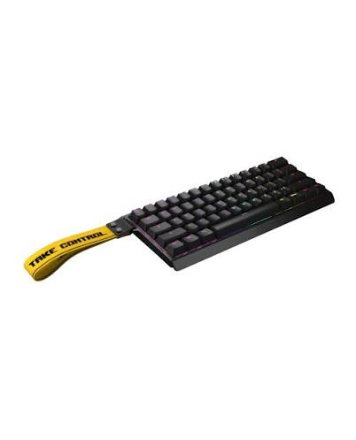

Inicio
Mouses
Inicio
Mouses

O Wooting 60HE é um teclado mecânico gamer de formato compacto (60%) amplamente reconhecido como um dos melhores do mundo para jogos competitivos, especialmente em FPS.Principais Características e TecnologiasSwitches Magnéticos (Hall Effect): Utiliza interruptores lineares Gateron Lekker sem contato metálico físico, acionados por sensores magnéticos. Isso reduz drasticamente o desgaste mecânico e oferece leitura analógica precisa do movimento da tecla.Ponto de Atuação Ajustável: Permite calibrar a sensibilidade de cada tecla individualmente de 0,1 mm a 4,0 mm de profundidade.Rapid Trigger: Funcionalidade avançada que desativa a tecla no exato momento em que você começa a soltá-la e a reativa instantaneamente ao pressioná-la de novo, eliminando o atraso de reset mecânico e agilizando a movimentação no jogo.Taxa de Atualização (Polling Rate): Desempenho ultrarrápido com suporte a até 8000 Hz nas versões mais recentes/atualizadas, resultando em latência quase zero (cerca de 0,125 ms)